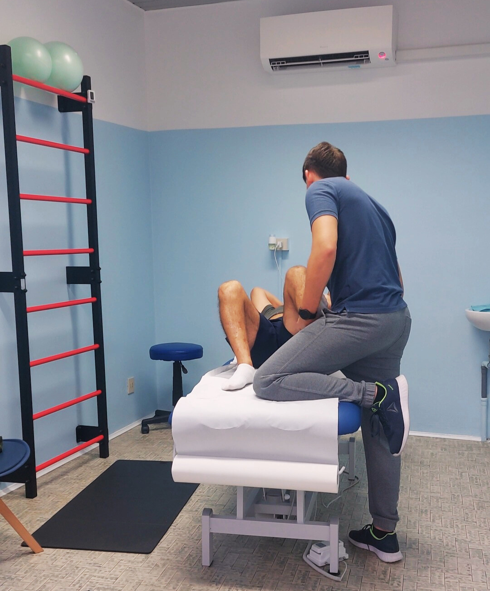
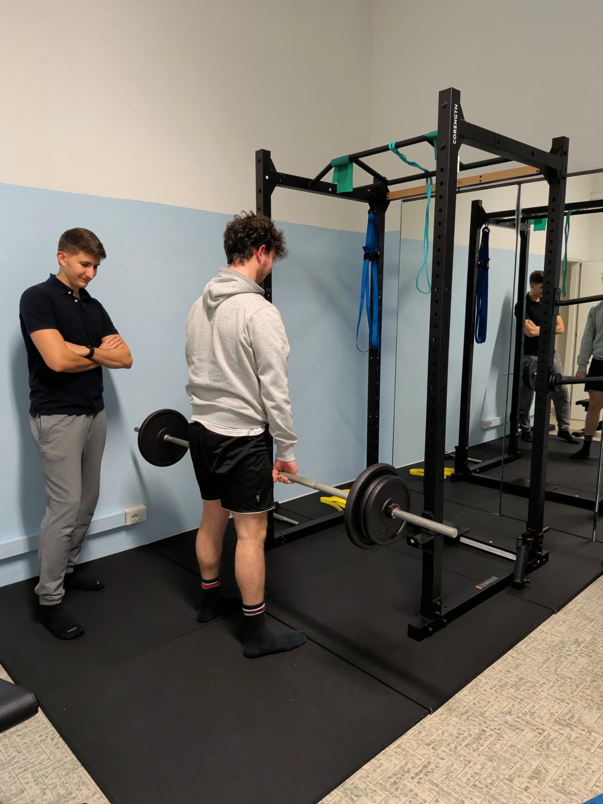
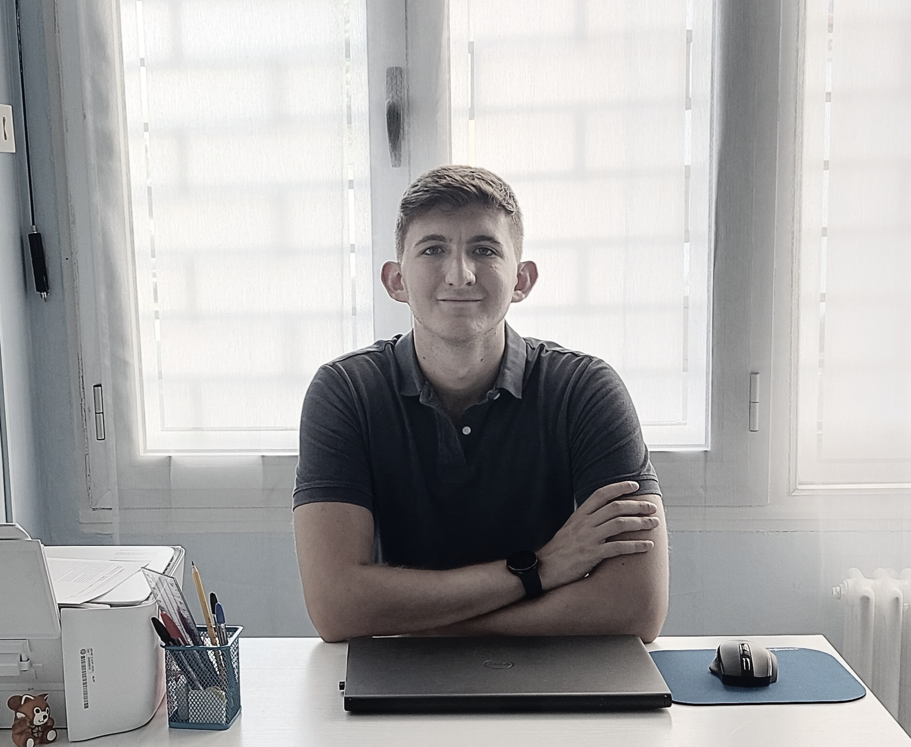

Il mal di schiena cronico non si risolve con il riposo, le terapie passive o aspettando che passi da solo. C'è un motivo per cui è ancora lì — e si può cambiare.

Il problema
Massaggi, tecar, riposo, postura. Ti hanno detto che è l'ernia, che è la colonna consumata, che devi imparare a conviverci. Il dolore è ancora lì.
Il problema non è che hai la schiena rotta. Nella maggior parte dei casi di dolore cronico, la causa non è strutturale — o non solo.
Il dolore cronico è anche un'esperienza del sistema nervoso. E quando il sistema nervoso impara che muoversi è pericoloso, inizia a proteggerti anche quando non ce n'è bisogno.
La paura del movimento diventa uno degli ostacoli principali. E il riposo, invece di aiutare, lo alimenta.
Non è colpa tua. Non hai fatto niente di sbagliato.
Ma c'è un motivo per cui non è passato — e si può cambiare.
Il percorso
Non uso protocolli uguali per tutti. Ogni percorso inizia da te — dalla tua storia, dalle tue abitudini, da quello che vuoi tornare a fare.
"Il dolore non significa che stai facendo danno."
Nella prima visita gratuita ti ascolto: la tua storia, i tuoi obiettivi, le tue preoccupazioni. Lavoriamo insieme per smontare le credenze che bloccano il movimento — postura, ernia, riposo obbligato. Esci dalla prima visita con una lettura diversa del tuo dolore.
"Il corpo impara di nuovo che muoversi è sicuro."
Lavoriamo 1–2 volte a settimana con pochi esercizi scelti su misura. Ti espongo gradualmente ai movimenti che evitavi. Gli esercizi non sono una lista da spuntare — sono strumenti concreti per gli obiettivi che contano per te.
"Non gestisci il dolore. Torni a vivere."
Riduciamo la frequenza delle sedute man mano che guadagni autonomia. Il mio obiettivo non è toglierti il dolore — è farti tornare alle attività che contano per te: il lavoro, lo sport, giocare con i tuoi figli, muoverti senza pensarci su.

Luca è arrivato da me con un mal di schiena cronico che lo accompagnava da anni. Non riusciva ad allacciarsi le scarpe. Aveva smesso di fare sport, aveva ridotto ogni attività. Aveva già fatto fisioterapia, più volte.
Non ho usato protocolli. Ho ascoltato la sua storia, capito i suoi obiettivi, costruito un percorso con pochi esercizi scelti come strumenti — non come condanna. Esposizione graduale. Conversazioni costanti su cosa significasse davvero quel dolore.
Oggi Luca fa deadlift con il bilanciere carico. Non perché il dolore sia sparito per magia — ma perché ha imparato che il suo corpo può muoversi. E il movimento è parte della soluzione.
Quello che dicono
"Avevo mal di schiena da due anni, non riuscivo a stare in piedi più di venti minuti. Dopo sei settimane con Umberto sono tornata a camminare normalmente e ho ripreso a lavorare senza antidolorifici."
"Mi avevano detto che con l'ernia non potevo fare molto. Umberto mi ha spiegato perché non era così. Ho ricominciato ad allenarmi — qualcosa che non facevo da tre anni."
"Avevo paura di muovermi, ogni gesto sembrava pericoloso. Il percorso con Umberto mi ha insegnato a fidarmi di nuovo del mio corpo. Non ci avevo creduto possibile."
Nessun impegno, nessun pacchetto da comprare. Ascolto la tua storia, valutiamo insieme dove sei e dove vuoi arrivare.
Prenota la valutazione gratuita →Senza impegno · Prima visita gratuita · Rispondo di persona entro 24 ore

Chi sono
Sono Umberto Mantovan, fisioterapista. Ho aperto il mio studio a Broni nel 2025 dopo oltre cinque anni di lavoro tra Sanremo e la provincia di Pavia — ambulatori privati, strutture convenzionate SSN, supervisione di tirocinanti universitari.
Mi sono specializzato nel dolore muscoloscheletrico cronico, nella riabilitazione sportiva e negli aspetti psicologici e comunicativi del dolore. Ho imparato che le terapie passive — massaggi, tecar, ultrasuoni — possono dare sollievo. Ma da sole non bastano: sono come mettere un secchio sotto un rubinetto che perde. Risolvono il sintomo, non il problema.
Quello che ti offro è diverso: ti accompagno in un percorso costruito sui tuoi obiettivi reali — non su un protocollo standard, non su un numero di sedute deciso in anticipo.
Hai qualche dubbio?
Dipende da cosa è stato fatto e su cosa era focalizzato. Molti percorsi si concentrano sul sintomo — togliere il dolore nel breve termine — senza lavorare sui fattori che lo mantengono nel tempo. Ne parliamo nella prima visita gratuita: capire cosa hai già fatto aiuta a capire cosa può essere diverso.
Nella maggior parte dei casi, sì. Le evidenze scientifiche mostrano che l'ernia non spiega da sola il dolore cronico — e che il movimento, affrontato con gradualità, è parte della soluzione. Valutiamo insieme il tuo caso nella prima visita gratuita.
Non posso dirtelo prima di vederti — e chiunque te lo dica senza conoscerti sta inventando un numero. Quello che posso dirti è che i primi risultati concreti nel dolore cronico arrivano di solito in 4–8 settimane, e che il percorso si costruisce in base ai tuoi obiettivi reali e al tuo ritmo.
Sì, completamente. La prima visita dura 45–60 minuti: ascolto la tua storia, faccio una valutazione clinica e ti spiego cosa vedo e come potremmo lavorare insieme. Non acquisti nulla, non ti viene chiesto nulla. Se poi ha senso andare avanti, lo decidiamo insieme.
Al contrario. Il mio obiettivo non è fermarti — è accompagnarti a muoverti meglio e con meno paura. Il movimento graduale è il principale strumento di recupero. Il riposo prolungato, nella lombalgia cronica, raramente aiuta.
La maggior parte del mal di schiena cronico non è pericolosa — ma ci sono segnali che richiedono valutazione medica urgente: perdita di controllo di vescica o intestino, intorpidimento nella zona inguinale, debolezza muscolare che peggiora rapidamente, dolore notturno ingravescente a riposo. Se hai uno di questi sintomi, rivolgiti prima al medico. In tutti gli altri casi, ne parliamo nella prima visita gratuita.
La prima visita è gratuita. Nessun pacchetto, nessun impegno. Solo un'ora per capire dove sei e dove puoi arrivare.
Studio Mantovan – Fisioterapia in Movimento · Broni (PV) · 351 924 2517 · studio.mantovan@gmail.com
📍 Vedi su Google Maps